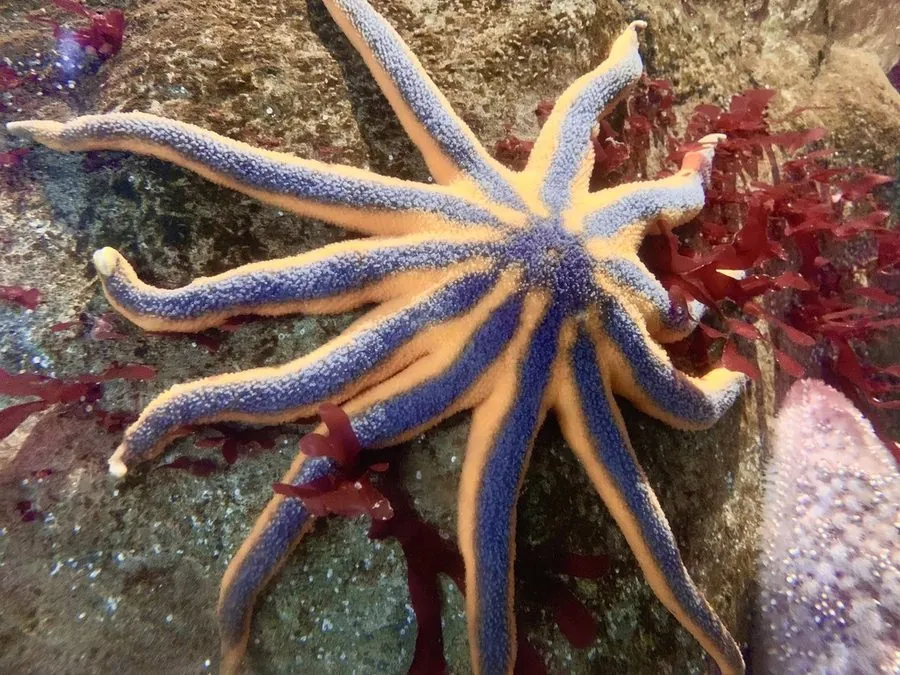

其他无脊椎动物 · 动物界
太阳海星 Solaster stimpsoni

北太平洋冷水海域的海星，腕多达 8–12 条，展开像太阳，颜色橙红，以海参、海鞘和小型底栖动物为食。
- 分类
- 门棘皮动物门纲海星纲目瓣海星目科太阳海星科属太阳海星属
- 栖息环境
- 北太平洋冷水海域的岩礁、砂泥底和潮下带
- 地理分布
- 日本北部、俄罗斯远东和北美西海岸
- 保护级别
- IUCN 暂无评估
物种志
太阳海星的腕多达 8–12 条，围绕中央盘呈放射状排列，展开时像一轮太阳，直径可达 20–30 厘米。体色多为橙红色、红色或紫红色，表面布满小棘和颗粒，腕的基部较宽，向末端逐渐变细。
它分布于北太平洋的冷水海域，从日本北部、俄罗斯远东到北美西海岸，栖息于岩礁、砂泥底和潮下带，水深 0–300 米。太阳海星是肉食性动物，以海参、海鞘、海胆、贝类和小型底栖动物为食，靠管足和腕把猎物抱住送入口中。繁殖期在春季，雌雄个体释放精卵，受精卵发育为浮浪幼虫。太阳海星在冷水底栖食物网中处于较高位置，对控制海参等猎物的数量有一定作用。
形态与习性
- 腕数8–12 条，展开像太阳
- 体径约 20–30 cm
- 食性海参、海鞘、海胆、贝类和小型底栖动物
- 水深0–300 m 的岩礁和砂泥底
- 繁殖春季释放精卵，浮浪幼虫发育
- 分布北太平洋冷水海域
趣味知识
- 太阳海星有 8–12 条腕，展开时像一轮橙红色的太阳。
- 它能把海参整个抱住吞下，是海参的重要天敌之一。
- 太阳海星生活在冷水中，从潮间带一直分布到数百米深的海底。